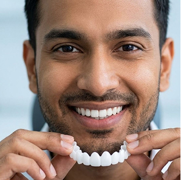

<section class="info__section">
    <div class="container">
        <div class="info__section-wrapper">
            <h2 class="info__title">
                जब आप बात करते हैं तो क्या लोग आपके दांतों पर ध्यान देते हैं?
            </h2>
            <div class="info__block">
                <ul class="info__list">
                    <li class="header__list-item">
                        जब आप हंसते हैं तो अपना मुंह ढक लें?
                    </li>
                    <li class="header__list-item">
                        तस्वीरों में मुस्कुराने से बचें?
                    </li>
                    <li class="header__list-item">
                        क्या आपको लगता है कि आपको अपने दाँतों के कारण आंका जाता है?
                    </li>
                </ul>
                <div class="info__imgs">
                    
                    
                    
                </div>
                <p class="info__text info__text-red">
                    दागदार, टेढ़े-मेढ़े या टूटे हुए दांतों के कारण <span>हर दिन लाखों लोग आत्मविश्वास खो देते हैं.</span>
                </p>
                <p class="info__text">
                    कल्पना कीजिए कि आप अपने दांतों की वजह से सामाजिक कार्यक्रमों, पार्टियों और तस्वीरों से दूर रहते हैं।
                </p>
                <p class="info__text">
                    <span>आपके दांतों को आपके जीवन को नियंत्रित नहीं करना चाहिए - लेकिन अभी, वे ऐसा करते हैं।</span>
                </p>
            </div>
        </div>
    </div>
</section>